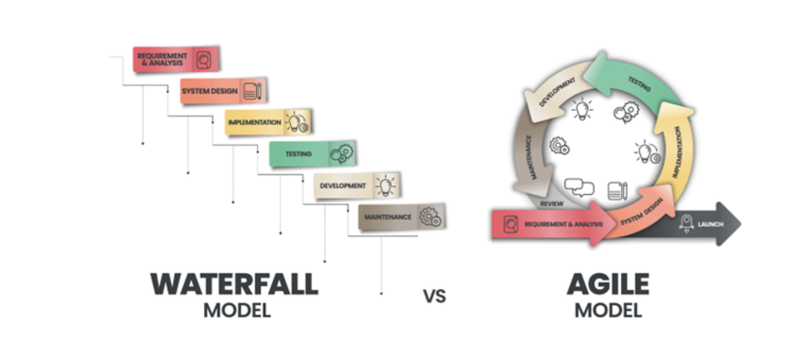

AGILE AND LEAN PROJECT MANAGEMENT
Basic description of Agile Project Management
Agile project management definition
Agile project management is a methodology used primarily in software development that favors flexibility and collaboration, incorporating customer feedback throughout the project life cycle. The methodology takes an iterative approach to development, breaking down work into small, manageable cycles called “sprints” to focus on continuous improvement in the development of a product or service.
In addition to emphasizing iterative development, in which each sprint results in a potentially shippable increment, agile project management incorporates cross-functional teams who work closely with stakeholders in a process that allows for adjustments as requirements evolve and formalizes feedback loops at the end of each sprint.
Agile Project Management benefits
Compared to traditional project management, agile provides project teams, sponsors, project leaders, and customers many project-specific benefits, including:
- More rapid deployment of solutions
- Reduced waste through minimization of resources
- Increased flexibility and adaptability to change
- Increased success through more focused efforts
- Faster turnaround times
- Faster detection of issues and defects
- Optimized development processes
- A lighter weight framework
- Optimal project control
- Increased focus on specific customer needs
- Increased frequency of collaboration and feedback
In terms of business benefits, both the digital workplace and Agile provide:
- Increased flexibility
- Increased productivity
- Increased transparency
- Higher quality deliverables
- Decreased risk of missed objectives
- Decreased risk of missed objectives
Basic description of Lean Project Management
What Is Lean Project Management?
Lean project management is the application of lean manufacturing principles to the practice of project management. The goal of lean project management is to maximize value while minimizing waste. Lean manufacturing principles were developed by Toyota in the 1950s and applied in the 1970s to combat the energy crisis. The term “lean” was coined in the late 1980s. The Project Management Institute sums it up: “To be Lean is to provide what is needed, when it is needed, with the minimum amount of materials, equipment, labor, and space.”
Lean manufacturing identifies three types of waste: muda, muri, and mura (known collectively as the 3M).
- Muda refers to activities that consume resources without providing additional value
- Muri refers to the overuse of equipment or employees
- Mura is operational “unevenness,” which decreases efficiency and productivity in the long term
Lean Project Management aims to reduce the 3M within the project process.
What are the benefits of Lean Project Management?
Organizations that use lean project management can expect: Organizations that use lean project management can expect:
- Reduced lead times
- Lower inventory and storage costs
- Decreased overall costs
- Improved productivity and efficiency
- Greater quality
- Higher customer satisfaction
The five key principles of Lean Project Management
First published in 1996, the book Lean Thinking by James P. Womack and Daniel T. Jones introduced five key principles that can be used to apply the lean concept to project management.
- Specify value: What is the project’s value in the mind of the customer?
- Map the value stream: A “value stream” map shows the entire process for creating the product or project. Once this process is mapped, it can be analyzed for waste, such as unnecessary steps that tax resources or compromise quality.
- Make value flow by eliminating waste: Creating an improvement plan will eliminate the waste identified in the value stream. This plan represents a “future state” for the project’s process.
- Make value flow at the customer’s demand: The ideal scenario is to move the project forward or create the product when requested by the customer. Get as close to this as possible to reduce inventory and save resources.
- Embrace continuous improvement in pursuit of perfection: Regularly reassess the project process to eliminate waste and maximizing productivity and efficiency.
Differences between Waterfall and Agile Project Management
Waterfall Project Management
- Waterfall projects follow a linear and sequential approach, where each phase of the project must be completed before the next one begins. Common phases include requirements, design, implementation, testing, deployment, and maintenance.
- Waterfall requires extensive project planning, scope definition, and documentation at the beginning of the project. Changes to scope and requirements are difficult to implement once the project starts.
- Documentation is a critical component of the Waterfall methodology. Detailed documentation for each phase serves as a reference through the project lifecycle.
- The scope, timeline, and costs are determined at the start of the project, making it suitable for projects with well-understood requirements.
- Due to its linear nature, any changes or errors discovered late in the project can be costly and difficult to rectify.
Due to its linear nature, any changes or errors discovered late in the project can be costly and difficult to rectify.
- Agile projects are broken down into small, manageable increments or iterations, typically lasting 2-4 weeks. This allows for regular feedback and adjustments throughout the project.
- While there is an overall plan, Agile projects are flexible and expect changes in requirements and scope. Agile embraces change, even late in development, to ensure the product meets the end users' needs.
- Agile focuses on regular communication and close collaboration between cross-functional teams and stakeholders. Daily stand-ups and retrospectives are common practices.
- Agile methods prioritize customer feedback and satisfaction. Working products or prototypes are delivered frequently to get feedback and ensure the product aligns with customer needs.
- Regular iterations and feedback loops allow for early detection of issues and course corrections, reducing overall project risk.
Key Differences Summarized
- Approach: Waterfall is linear and sequential; Agile is iterative and incremental.
- Flexibility: Waterfall has limited flexibility once the project starts; Agile accommodates and encourages changes.
- Planning: Waterfall requires detailed upfront planning; Agile plans are more flexible and evolve as the project progresses.
- Documentation: Waterfall relies heavily on documentation; Agile focuses more on collaboration and working software.
- Risk Management: Waterfall risks are generally addressed at the end; Agile addresses risks continuously throughout the project.
Typical Use Cases:
Use Cases for Waterfall Project Management
- Construction Projects: Building a house or commercial property requires a sequential approach, from foundation laying to framing, plumbing, and finishing.
- Manufacturing: When producing physical goods, such as cars or appliances, the production process is linear, and changes in later stages can lead to significant rework and expenses.
- Regulated Projects: Projects in industries like aerospace, pharmaceuticals, and finance often have strict regulatory requirements. The comprehensive documentation and predefined scope of Waterfall can be necessary to ensure compliance.
- Well-Defined Projects: Projects with clear, stable requirements and no expected changes in scope can benefit from Waterfall's structured approach. An example could be the development of a standard software application with well-understood requirements.
Use Cases for Agile Project Management
- Software Development: Agile is particularly well-suited for software projects, where requirements can change rapidly due to technology advancements or user feedback. Agile's iterative nature allows for continuous improvement and adaptation.
- Product Development in Fast-Moving Industries: In sectors like technology or consumer electronics, where market demands and trends can shift quickly, Agile allows teams to adapt product features based on real-time customer feedback.
- Projects with Uncertain Requirements: When the final product cannot be fully defined at the outset, Agile allows for exploration and adjustments as more information becomes available. This is common in new product innovations.
- Highly Collaborative Projects: Projects that benefit from close teamwork, ongoing stakeholder engagement, and frequent communication are well-suited to Agile. Examples include creative and marketing campaigns where client input is crucial throughout the project.
- Rapid Prototyping: When a project involves creating prototypes to test concepts or designs, Agile's iterative cycles are ideal for refining the product based on continuous testing and feedback
Source
https://www.wrike.com/project-management-guide/faq/what-is-lean-project-management/
Benefits of Agile and Lean Project Management
Benefits of Agile
- Adaptability: Quickly respond to changes in requirements.
- Customer Satisfaction: Align with customer needs through continuous feedback.
- Collaboration: Foster teamwork and communication within the team.
- Faster Delivery: Incremental releases lead to quicker time-to-market.
- Risk Management: Early identification and mitigation of potential issues.
Benefits of Lean
- Efficiency: Streamline processes to eliminate waste.
- Customer Value: Prioritise features that directly contribute value to the customer.
- Continuous Improvement: Consistently refine processes for enhanced productivity.
- Cost Savings: Minimize unnecessary activities to reduce overall costs.
- Flexibility: Quickly adapt to changing demands and market conditions.
Disadvantages of Agile and Lean Project Managment styles.
Disadvantages of Agile
The Agile methodology is very popular in project teams across the globe, particularly in software development. This is because there are myriad benefits to incorporating Agile practices into your organization, including customer satisfaction, higher-quality deliverables, improved communication, and fewer risks.
However, some teams have also encountered problems with Agile. These Agile drawbacks can derail a project and threaten its success, so it’s important to recognize and tackle them before they escalate.
Let’s take a closer look at the disadvantages of Agile:
-
Lack of documentation
This is one of the biggest issues faced when teams transition from Waterfall project management to an Agile framework. Agile teams condense large volumes of data into smaller user stories, which don’t contain a great amount of detail. This can make it difficult for a developer to grasp the exact customer requirements. Without a clearly documented plan or an official process to follow, team members can easily get confused when moving through project stages.
-
Scope creep
Another major obstacle is scope creep. Customer needs change constantly, inevitably leading to a widening of the project scope. Deliverables multiply quickly, and new features are often added to the workload. Some requirements may need to be rewritten entirely or replaced with updated ones. Teams can become overwhelmed and lose track of these requirements, unsure of which ones to prioritize.
-
High demands on time
Time is another consideration to add to the list of Agile challenges. Team members must make room in their schedule for daily standup meetings, which can disrupt their workflow. What’s more, the Agile philosophy requires developers to engage in constant collaboration with testers, clients, and other project stakeholders. This high level of interaction can place a significant strain on Agile team members and their time management abilities.
-
Unsuitable for long-term projects
Finally, one of the most common Agile problems occurs when teams try to make the methodology work for unsuitable projects. Agile iterations are designed to produce smaller deliverables incrementally, which is ideal for software development. However, this level of fragmentation would not be compatible with a long-term project. For example, in a construction project such as building a house, the final deliverable is fixed and change is undesirable, making it more suited to a Waterfall framework.
To limit the potential disadvantages of Agile, you should research your preferred Agile project management framework thoroughly before implementing it in your organization. If you already use an Agile framework, consider the question posed by professional services firm Deloitte: “How fragile is your Agile?” Document your existing pain points and brainstorm ways to strengthen your future Agile projects.
Disadvantages of Lean
As with all things, there are downsides. However, as with all downsides, there are steps you can take to minimize the chance of occurrence. Here are the main things to look out for:
-
Lack of time
Lean requires some planning and time upfront: you’ll need to take a deep dive into your current workflow and team activities, which could include tracking things over a period of time (if you’re not already), as well as talking to team members and heads of other teams. You’ll also need to encourage your team to meet regularly (many Lean teams hold a daily standup) to discuss the work that’s been completed, what needs to be done, and any problems that could get in the way.
-
A lack of strategy
Some organizations get so focused on Lean tactics that they lose sight of the bigger picture. One way to get around this is to create a project charter for each project, as well as an overall mission statement.
-
Not enough buy-in
Lean is considered a radical way of working that requires complete buy-in from teams. They’ll need to work independently without too much direction, which might not work if your team is inexperienced. Implementing a new strategy can also cause stress, especially if it’s a particularly results-oriented methodology — which Lean is. Brush up on your organizational communication skills so you can effectively tell everyone why they are shifting to this way of working. You may also need to invest in training to get less experienced (or resistant) workers up to speed.
-
Cutting things too fine
Lean follows a ‘pull’ style of working which means work is delivered as needed, and not preemptively. However, if there’s a bottleneck or your resources are low (for example, someone’s off sick), then delays can start adding up quickly. Having a contingency plan in place can help provide leeway, while smart planning using project management software will help you track tasks in real time, helping you plan ahead.
How to implement Agile or Lean Project Managment to projects?
How to implement Agile methodology into projects ?
If you’re wondering how to apply Agile methodology to your team’s workflows, here’s a step-by-step guide for Agile methodology implementation:
-
Choose the right Agile framework
Your first priority is to select the right Agile framework for your team. Here’s a reminder of some of the most popular options:
- Scrum: Principle-based project management
- Kanban: Visual workflows and processes
- Scrumban: Hybrid of Scrum and Kanban
- XP: Customer-focused product development
- APF: Versatile teamwork
When selecting an Agile framework, consider the size of your team, the specific project requirements, and the level of experience your team has with the various methodologies.
The more you know about your team and the projects you handle on a regular basis, the easier it will be for you to pick the right framework every time.
-
Assemble your Agile team
An Agile team isn’t like any ordinary team. If you want to find success with any of the Agile methodologies, you need to build a team with clear roles and responsibilities and a culture of collaboration.
What are some of the responsibilities of an Agile team?
- Self-organization: One of the cornerstones of an Agile team is the ability to self-organize. In Agile project management, the onus is on individual team members and teams to take initiative and organize themselves in a way that will lead to the highest output.
- Cross-functional collaboration: Going hand in hand with the need for self-organization is the Agile demand for cross-functional collaboration. Agile teams have to relay information across departments and be able to work closely with a range of colleagues.
- Iteration planning: Specific to Agile project management, iteration planning requires team members to outline the scope of individual sprints according to the product backlog.
-
Plan the project
Now that you’ve selected one of the Agile methods and assembled your A-team, it’s time to plan out your project.
Meticulous planning is one of the secret ingredients of successful Agile project management.
From the outset, you need to spend time clearly defining your project goals and scope. This will prevent unexpected setbacks and allow you to break down each portion of the project into manageable sprints (if you’re using Scrum).
You might also draw up a product backlog during the planning phase, which is most common in software development projects. The product backlog allows you to assign a priority level to your tasks so everyone on the team knows what they should focus on.
-
Manage stakeholder expectations
Before you get your project underway, it’s important to check in with any key stakeholders to make sure you factor in their feedback.
Depending on the level of their involvement, your project stakeholders may then want to be kept in the loop throughout the process or at least receive regular updates. Creating feedback loops eases any uncertainty on the stakeholder end and allows you to stay open to change should it be necessary at any stage of the process.
-
Measure success
Measuring project success is key to making meaningful progress with your Agile methodology of choice.
By paying attention to what worked and what didn’t during the project management process, you can extract key lessons to apply to future Agile projects.
There are various ways to effectively track progress and measure success with Agile projects:
- Daily standups: Brief meetings to discuss obstacles and find solutions
- Sprint reviews: Informal sit-down meetings to present work and solicit team feedback
- Retrospectives: Reflections on past work to inspire and influence future progress
You should also introduce key performance indicators (KPIs) before embarking on any new major project, as getting specific will help you establish milestones and measure progress.
How to implement Lean Project Management into projects?
Although lean project management is used in organizations of all types and sizes, it works best (at least to start) for small projects and small teams because it requires strong communication. As your organization grows, you can continue to nurture the lean mindset among new members.
The below presents an overview of the major phases associated with implementing lean project management:
-
Create a culture of ownership.
The traditional top-down approach doesn’t fit with the lean project management philosophy. While management ultimately takes full responsibility for products, processes, and business requirements, it is important for everyone to feel a sense of responsibility—and thus a sense of equality—when it comes to improving the way an organization works. Set a standard for openness and transparency to create an environment in which everyone is encouraged to identify problems and test solutions.
-
Establish a knowledgeable team.
There is no lean project management template that works for every project; application of the principles may not look exactly the same in every instance. That’s why it’s important to form a well-equipped team that has deep knowledge of lean project management values and is capable of keeping everyone focused. One way to increase your team’s knowledge of lean is to provide internal training sessions clarifying the procedures and methods around lean principles. You can also keep lean at the forefront by conducting periodic Kaizen workshops—process improvement sessions—that help teams get better at identifying and implementing changes.
-
Make lean improvements part of your culture.
A culture of improvement should permeate throughout your organization. Encourage and empower teams to look for continuous improvement everywhere. Self-motivated team members should be able to evaluate a process, take the steps to make improvements, or, if they see a real need, call in a designated "lean team" for bigger opportunities. Staying true to lean requires continuous attention.
GANTT chart
Gantt charts are a popular project management tool used to visualize the timeline of a project's tasks and milestones. They offer a detailed overview of the project schedule, showing when work is planned to start, how long it's expected to take, and the dependencies between tasks. In the context of agile project management, Gantt charts can be adapted to provide clarity and enhance communication among team members, stakeholders, and clients.
A Gantt chart is structured with two main components:
- The vertical axis lists the project tasks or activities.
- The horizontal axis represents the project timeline, usually with days, weeks, or months.
Each task is represented by a horizontal bar; the position and length of the bar reflect the task's start date, duration, and end date. Dependencies between tasks can also be shown, indicating if a task must be completed before another can start.
Gantt Charts in Agile Project Management
Agile project management emphasizes flexibility, continuous improvement, and customer satisfaction. While Gantt charts are traditionally associated with waterfall project management, they can also be valuable in an agile context by:
- Visualizing Sprint Planning: Agile teams can use Gantt charts to plan sprints by outlining tasks, assigning responsibilities, and setting deadlines. This helps ensure that the team understands the sprint goals and the timeline to achieve them.
- Tracking Progress: By updating the Gantt chart as tasks are completed, teams can visually track their progress against the sprint or project timeline. This can be particularly useful for communicating with stakeholders who are not involved in the day-to-day activities of the agile team.
- Managing Dependencies: In complex projects, even agile ones, there may be dependencies that need careful management. Gantt charts can highlight these dependencies, helping teams coordinate their work to avoid bottlenecks.
Example of Use
Consider an agile team developing a new software feature. The project is broken down into several sprints, each with specific tasks like "Design UI," "Develop Backend," "Conduct User Testing," and "Deploy Feature."
A Gantt chart for this project might list these tasks vertically, with sprints marked across the top horizontally. The chart would show the planned duration for each task and any dependencies, such as "Develop Backend" needing to be completed before "Conduct User Testing." As the team progresses, completed tasks are marked on the chart, providing a clear visual representation of the project's current status.
Best Practices for Using Gantt Charts in Agile
- Keep it flexible: Update the Gantt chart regularly to reflect changes in the project scope or timeline, maintaining agility.
- Focus on short-term planning: While Gantt charts can be used for long-term planning, they are most effective in an agile context when focused on the immediate next steps, such as the upcoming sprint.
- Use as a communication tool: Share the Gantt chart with team members and stakeholders to keep everyone informed about the project's progress and any adjustments to the plan.
Source
- https://cio.com/article/237027/agile-project-management-a-beginners-guide.html
- https://www.wrike.com/agile-guide/faq/disadvantages-of-agile/
- https://nulab.com/learn/project-management/lean-management-pros-cons-everything/
- https://www.wrike.com/project-management-guide/faq/what-is-agile-methodology-in-project-management/
- https://www.clearpointstrategy.com/blog/lean-project-management